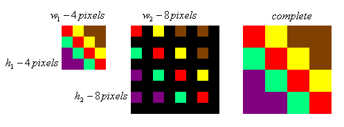

介绍
最近邻图像缩放(插值)算法是最简单、最快的图像缩放技术。当主要关心速度时，该算法非常有用。更加复杂的缩放算法有：双线性(bilinear)插值、双三次(bicubic)插值、样条(spline)插值、sinc等。与最近邻插值不同，此其他变体使用邻近像素的插值，从而获得更平滑的图像。
原理
缩放原理是 拥有一张参考图像，并以此图像作为基础来构造新的缩放图像。 根据缩放的比例，可获得不同比例的新图像。放大图像时，实际是在原始基础图片中引入空白区域。如下图，图像尺寸为(w1 = 4, h1 = 4)放大为(w2 = 8, h2 = 8)。黑色像素表示需要插值的空白区域，complete是最近邻插值的完整图片。

算法通过寻找合适的点插入空白区域，并用最近邻像素替换这些空白区域。这会导致图像清晰但是会呈现锯齿状，如果放大倍数为2，则每个像素的大小将增加一倍。另一方面，缩小图像会减少像素意味着将丢失一些无法恢复的信息。这种情况下，缩放算法是要找到需要正确丢失的像素。
算法只需要原始图像与(待缩放)图像间的水平和垂直比率。

代码示例
func resize(img image.Image, width, height int) image.Image {
tmp := image.NewRGBA(image.Rect(0, 0, width, height))
x_ratio := float64(img.Bounds().Dx()) / float64(width)
y_ratio := float64(img.Bounds().Dy()) / float64(height)
for i := 0; i < height; i++ {
for j := 0; j < width; j++ {
px := math.Floor(float64(j) * x_ratio)
py := math.Floor(float64(i) * y_ratio)
tmp.Set(j, i, img.At(int(px), int(py)))
}
}
return tmp
}